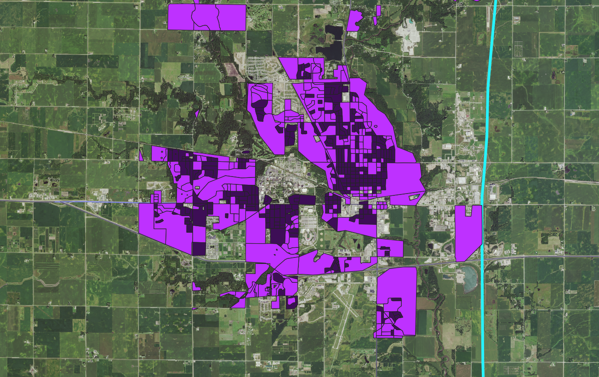
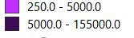

Created February 10th, 2019 by Abbey Warke
The map shows the overall population density of 2015 at ISU!

The map above was created to show the population density of Iowa State University and shows the highest populated areas on and off campus.
The lighter purple color designates a population denity of 250 to 5000 people per square mile. The darker purple desigates the areas with the highest population
denisty of 5000 to 15,500 people per square mile.
A visual of this is given by the legend below.
